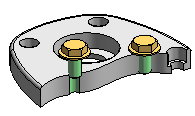

Checking interference on parts
Solid Edge allows you to check for interference between parts in assemblies using the Check Interference command on the Inspect tab.

Creating sets of parts
To run an interference analysis, you must create one or two sets of parts. A set of parts typically contains many parts; however, each set can contain any number of parts. If a set of parts will include all the parts in a subassembly, you can select the subassembly using the PathFinder.
You can also use the Select Tools tab on PathFinder to define a select set using a query.
Checking sets of parts for interference
You can check parts in the following ways during the interference analysis:
-
All parts of set one against all parts of set two.
-
All parts of set one against all other parts in the active assembly.
-
All parts of set one against all currently displayed parts.
-
All parts of set one against themselves.
Unless you indicate otherwise, the software uses the first option, checking all the parts of set one against all the parts of set two.
Interference and threaded features
You can use the settings on the Options Tab (Interference Options dialog box) to control how threaded fastener interference is checked.

Check interference can report or ignore interferences when the threaded portion of a bolt interferes with a non-threaded hole in a mating part. For example, you would typically want to ignore interferences when using a self-tapping bolt in a non-threaded hole, but would want to report interferences when a standard bolt extends past the thread depth in a threaded mating part.
The Ignore Threaded Fasteners Interfering With Non-threaded Holes option allows you to control whether interference is detected in these situations.
Check interference also can report or ignore interferences between a threaded cylinder and a threaded hole whose nominal diameters match. When you set the Ignore Interferences of the Same Nominal Diameter option, if the thread pitch does not match between a bolt and a threaded hole with the same nominal diameters, no interference is detected.
Analyzing results
Before running the interference analysis, you can set options for analyzing results. The following methods are available:
-
Output a report to a text file.
-
Display the interfering volumes.
-
Save the interfering volumes as parts.
-
Highlight the interfering parts.
-
Dim the display of parts that do not interfere.
-
Hide parts not selected for an interference check.
If no interferences were detected during the interference analysis, the software displays a message box telling you that no interferences were detected.
How do I
Move a part in an assemblyMove multiple parts in an assembly
Check for interference between parts in an assembly
Learn more
Analyzing movement and detecting collisions in assembliesMoving and mirroring rules for assembly bodies
Look up more details
Move Components commandMove Components command bar
Move Options dialog box
Drag Component command
Steering Wheel
Check Interference command
Drag Component command bar
Analysis Options dialog box
Check Interference command bar
Report page (Interference Options dialog box)
Interference Options dialog box
Options page (Interference Options dialog box)